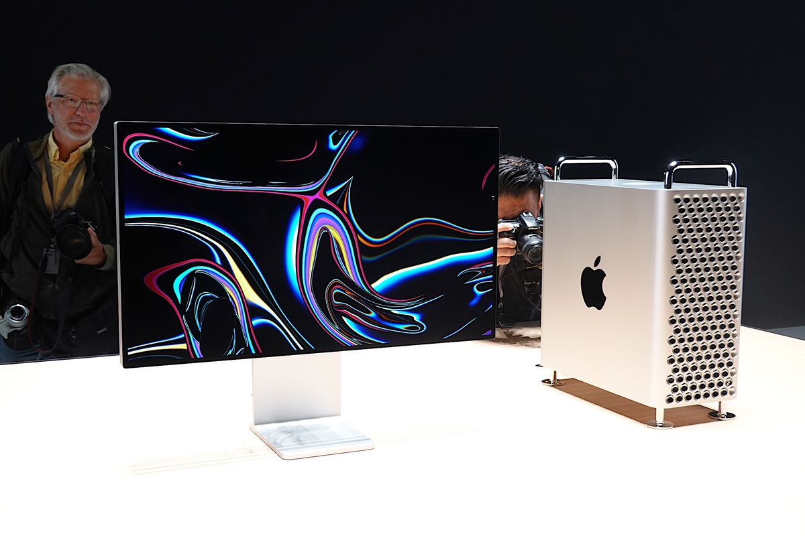

Kompjuterët Mac të cilët nuk do të mbështeten dhe riparohen më nga Apple...
Zakonisht Apple mbështet këto pajisje për 5 vite nga momenti i debutimit ndërsa nëse janë të disponueshme, pjesët e tyre shiten për 7 vite. Raportohet se Apple është gati të lançojë disa modele të reja desktop këtë vit dhe pavarësisht se mund të konsiderohet lajm i mirë për disa, për të tjerë është i keq. Kjo sepse me çdo model të ri Mac, modelet e vjetra nuk mbështeten më. Kur një model Mac vjetrohet duke arritur fundin e jetës, Apple nuk dërgon më përditësime. Zakonisht Apple mbështet këto pajisje për 5 vite nga momenti i debutimit ndërsa nëse janë të disponueshme, pjesët e tyre shiten për 7 vite. Pas 7 vitesh kompjuteri juaj Mac është në dorë të fatit. Apple nuk e riparon më as ofron pjesë për të. Pra një produkt i Apple konsiderohet i vjetër dhe nuk mbështetet më nëse kanë kaluar 7 vite. Disa prej modeleve që nuk mbështeten më janë: iMac 2012 Mac Mini 2012 Mac Pro 2010 Nëse kompjuteri juaj nuk është në këtë listë ende mos festoni. Me ardhje e produkteve të reja Apple këtë vit lista mëposhtë pritet ti bashkohet pajisjeve që do të braktisen nga Apple: iMac 21.5-inç 2013 iMac 27-inç 2013 iMac 21.5-inç 2014 iMac Retina 5K 27-inç 2014 iMac Retina 5K 27-inç 2015 Mac Pro 2012 Me debutimin e çipi Apple M1, kompjuterët e vjetër me procesorë Intel janë vite dritë larg modeleve të fundit në shpejtësi dhe fuqi përpunimi.
